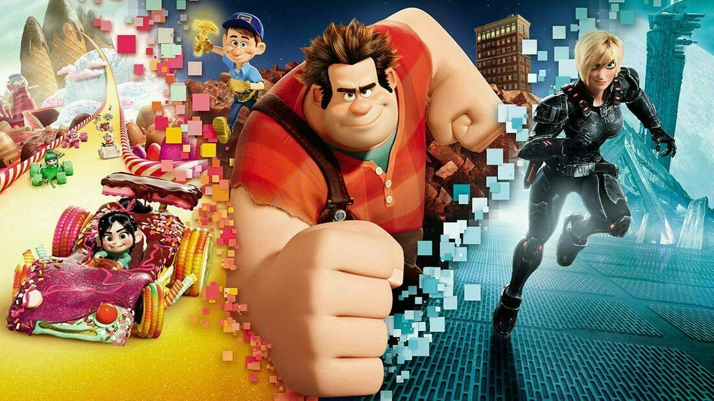

About Ralph
Ralph is awesome! He's an 8-bit video game character who travels around different video games to prove that he is a good guy.
Ralph and his friends
Ralph's Characterristics
- He's got big hands
- He's treated like a bad guy
- He's trying to be a good guy
Ralph's friends
Ralph has some awesome friends. I think his best friend is Glitch. She's awesome. Click on the links below to learn more!